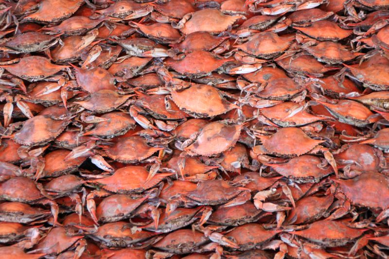

Person name
Person name
Intro
Welcome to the Baltimore composer walking tour, which shows visitors sites of importance in Baltimore's musical history. This tour is for the most part confined to the area between the midtown and downtown neighborhoods, in order to avoid making visitors walk too far. This tour requires javascript. If you are seeing this message on the tour page, please turn on javascript.